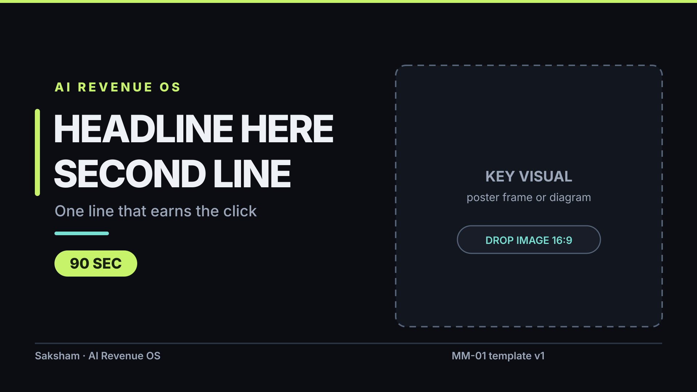

youtube-16x9-template
content/thumbnails/youtube-16x9-template.svg
- Canvas
- 1920×1080 · 1920:1080
- Text safe area
- x 96–1824, y 72–1008
- UI exclusions
- youtube-duration-badge
- Min contrast
- 7.53:1 ≥ 4.5
- Min font
- 28px ≥ 28px
- Headline @168px
- 20.85px tall · 45.9% of frame
- QA status
- PASS
Alt text Thumbnail template for a 16 by 9 video. On the left, a lime label reading "AI Revenue OS" above the placeholder headline "HEADLINE HERE / SECOND LINE", a grey line reading "One line that earns the click", and a lime badge reading "90 SEC". On the right, a dashed empty frame marked "KEY VISUAL" for a poster frame or diagram.
Rights MM-01 · first-party · internal / repo license · third party: none · model-generated: no · likeness: no · cleared

![Flow diagram of how work moves through AI Revenue OS. Six steps run down the centre: GA-02 audience and prospect research; MN-03 editorial brief and script; GA-03 animation source, outlined in lime and tagged "only author"; GitHub Actions rendering the MP4 and poster frames; MM-01 producing thumbnails, alt text and visual QA; and Saksham approving then publishing. GA-01 offer research feeds in from the left and MN-01 does a read-only render check beside GA-03. Amber gates mark the points where the CEO approves the brief and the title and caption. A red strip along the bottom states that only GA-03 may create or modify files under content/video/src/.](../visual/pipeline-diagram.svg)